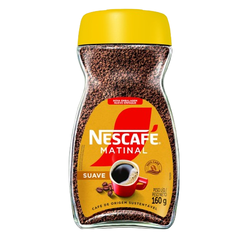
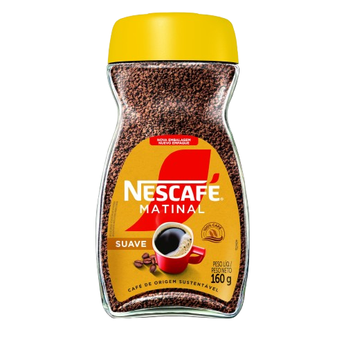

Desfrute bons momentos com Nescafé!
Nescafé nasceu de um desafio. Em 1929, o governo brasileiro, precisando de soluções para não desperdiçar e nem desvalorizar a grande produção de café daquele ano, pediu ajuda para a Nestlé.
Foram quase 10 anos de estudo até encontrarmos a resposta: um café solúvel que conservava o sabor e aroma natural do café, feito só com adição de água à uma xícara! Nunca tinha sido tão prático, rápido e fácil fazer um café. O sucesso foi verdadeiro, e em 24 meses Nescafé já estava sendo apreciado em mais de 30 países. Hoje você encontra Nescafé tanto na versão solúvel, quanto para coar.

 
